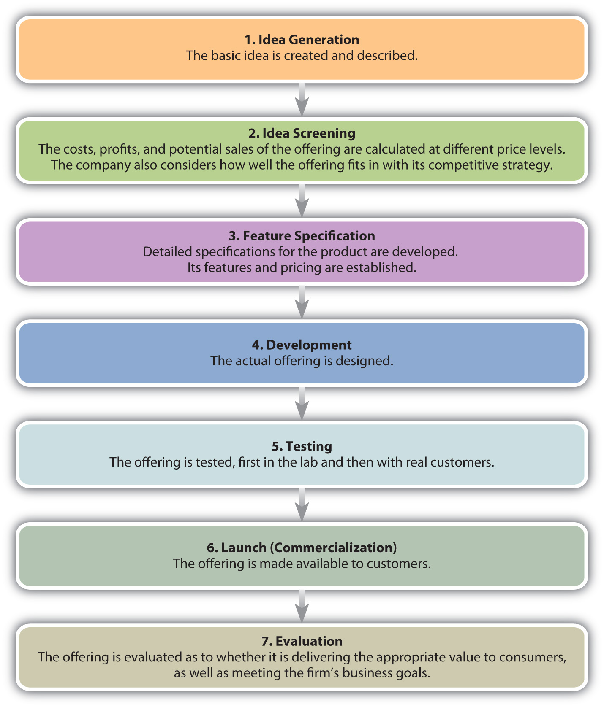
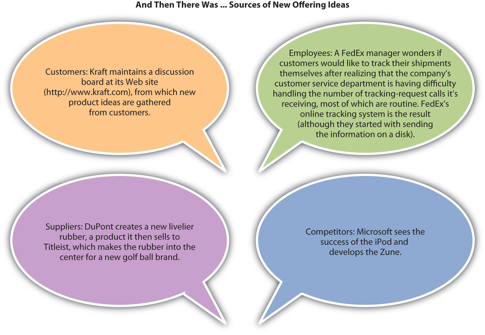
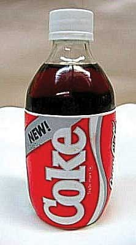

Most new offerings go through similar stages in their development process. Although the size of a company will affect how the different stages of their new product development process are conducted and whether products are test marketed before being introduced, the steps are generally the same. Figure 7.2 "The New Offering Development Process" summarizes these steps.
Figure 7.2 The New Offering Development Process
Many companies, HP and Apple included, were launched in someone’s garage after the founders got an idea for a product and then tried to make and sell it. HP’s first product was an audio oscillator that two Stanford University students developed. Apple’s Macintosh microcomputer was a low-cost knockoff of the Xerox Star, a software-equipped workstation. Apple’s cofounder, Steve Jobs, saw the product demonstrated at a Xerox research center and Xerox was an early investor in Apple.Lawrence M. Fisher, “Xerox Sues Apple Computer Over Macintosh Copyright,” New York Times, December 15, 1989, http://www.nytimes.com/1989/12/15/business/company-news-xerox-sues-apple-computer-over-macintosh-copyright.html? pagewanted=1 (accessed January 20, 2010).
Employees often come up with new product ideas, too. At Motorola, engineers are working on a mobile phone that can be recharged by rubbing it on smooth surface. A Motorola engineer came up with the idea while rollerblading. He wondered if a small generator could be created to capture and store the energy generated by rollerblade wheels. This idea, in turn, led to the development of a small roller ball (like you would find on an old-style computer mouse) built into the mobile phone. To power up the phone, you just give it a roll.
Ideas can come from anywhere, including your customers. In fact, in business-to-business (B2B) markets, customers are probably the biggest source of new product ideas. Customers know what customers need and want, which provides organizations an indication of market needs. Customers who are good at generating new product ideas or applications of products are called lead usersPotential customers who are innovative and develop new applications or new products for their own use without the aid of a supplier.. These people are often courted by manufacturers for this purpose. Lead users exist in consumer markets, too. JCPenney, for example, utilizes a panel of women who help develop and improve the company’s Ambrielle line of lingerie products.
Customers are particularly important cocreators of offerings when they are consuming products with service components. For example, if you provide your hairdresser with feedback while your hair is being cut, your input will alter the final style you receive. Similarly, a businessperson who provides her certified public accountant (CPA) with information and feedback about her firm will help the CPA develop better financial and tax plans for her business.
Suppliers provide another source of ideas for new products. A supplier might develop a new product or technology that can be used to make yet another product, and then go to the makers of those products and suggest new versions of them. For example, McClancy Seasoning Co. makes spices that restaurants and food processing companies use in their food products. McClancy’s research and development department works with companies such as Campbell’s to help them develop new and better offerings (for more information, visit http://www.mcclancy.com/research_and_development.asp).
Figure 7.4
Campbell’s creates many new products, including varieties of their Pace products, that may result from working with their suppliers.
Source: Wikimedia Commons.
Of course, companies also watch their competitors to see what they’re doing. Some offerings are protected by patents or copyrights and can’t be legally duplicated. The software that runs Apple’s iPhone is an example. There are, however, different ways to achieve the same results as Apple has with its iPhone. The Droid, manufactured by Motorola, and the G5, a copy of the Google phone, are devices similar to the iPhone that operate with software serving the same purpose.
Figure 7.5 "New Offering Ideas" shows some product ideas that came from each of the sources we have discussed—employees, customers, suppliers, and one’s competitors. Innovations like the iPhone are rare. However, many new ideas (and consequently new products) aren’t actually new but rather are versions of products and services already available. A line extensionA new idea or offering that occurs when a company comes out with another model (related product or service) based on the same platform and brand as one of its other products. occurs when a company comes out with another model (related product) based on the same platform and brand as one of its other products. When Apple added the Nano and the Shuffle to its iPod line, these were line extensions.
Figure 7.5 New Offering Ideas
Keep in mind that idea generation is typically the least expensive step in the process of developing a new offering, whether you involve customers or not. As you move through the product development process, each step is usually more expensive than the last. Ideas for new products are relatively cheap and easy to generate; what is difficult and expensive is making them a reality.
Not all new product ideas are good ones. Famous product blunders include Ford Motor Company’s Edsel, Clear Pepsi, and Coca-Cola’s New Coke. Less famous is Dell’s cell phone for aging baby boomers. The phone’s large size, large buttons, and large screen screamed “I’m old and blind!” leading potential users to shun it in droves. Yes, even the big companies make mistakes.
Figure 7.6
Better idea screening might have helped Coca-Cola avoid the problems it encountered marketing its “New Coke” formula.
Source: Wikimedia Commons.
The purpose of idea screening is to try to avoid mistakes early in the development process. The sooner bad ideas are discarded, the less the investment made and lost. In the idea screening stage, the company tries to evaluate the new offering by answering these questions:
Some organizations conduct concept testing at this stage. Concept testingPresenting an idea for an offering (including possible marketing communication ideas) to consumers for their reaction early in the offering development process. involves running the idea of the offering by potential consumers. The purpose is to get early consumer feedback before investing too much money in an offering that won’t work. Some of the methods used to test concepts include focus groupsA group of potential buyers brought together to discuss a marketing research topic with one another., in which groups of eight to twelve consumers gather and react to the concept, and depth interviewsAn exploratory research technique of engaging in detailed, one-on-one, question-and-answer sessions with potential buyers., in which individuals are presented with the concept and can react to it individually. Focus groups and depth interviews are research techniques that can also be used later in the offering development process to test ideas, or for other purposes. Focus groups working virtually on the Web and by phone actually helped to develop this textbook. Concepts may also be tested online by creating an image and having people representative of the target market provide feedback. Whether using focus groups, depth interviewing, or online methods, concepts must be evaluated by people representative of the target market or the feedback is not relevant.
Because screening considers the feasibility of actually making and servicing an offering, price and cost are important components. If the company cannot sell the product in sufficient quantities to generate a profit, the idea must be scrapped. Understanding the customer’s personal value equation (defined elsewhere as value being equal to benefits received minus the cost, which includes the time and effort of shopping and using) is an important consideration, too. If the value consumers receive from the product is less than the price the company charges for it, they will not buy it. In other words, the offering must be financially feasible to justify investing in it.
The offering must also have process feasibility. Process feasibilityThe degree to which the manufacturing of a product or the delivery of a service can be done within the proper quality specifications on a repeatable basis; the degree to which an organization can actually make and service an offering. is the degree to which the company can actually make and service the product. Process feasibility affects financial feasibilityA new offering’s ability to make money.. If the product’s costs cannot be controlled when it’s being made or serviced, the firm’s financial goals won’t be met. Process feasibility also affects customer satisfaction. For example, many manufacturers make great-looking faucets, yet one of your authors had to have the “guts” of one faucet replaced three times before it would work, only to find two other friends had the same experience with the same model. A great-looking design is really only great if it works right.
The question of strategic fit is a difficult one. The history of business is rife with examples of companies failing to develop winning new products only to see their competitors do so. For example, when the inventor Chester Carlson approached IBM executives with the idea of photocopying—the technology platform that later became the heart of Xerox Corporation—they turned Carlson down. IBM did not see the product fitting with its strategy and stopped before they fully considered the potential. Nor did IBM see the moneymaking opportunity the product presented.
Figure 7.7
A good product doesn’t just look right. It also works right, which is the idea behind process feasibility.
Source: Wikimedia Commons.
At this point in the process, the company begins to assess two types of risk. The first is investment riskThe potential of losing one’s money and time should a new offering fail., or the possibility that the company will fail to earn the appropriate return on the money and effort (the investment) it puts into the new product. The second is opportunity riskThe potential loss of revenue a company risks when it chooses an alternative course of action such as launching a different offering., or the risk that there is a better idea that gets ignored because the firm has invested in the idea at hand. When a company is assessing fit, it is assessing its opportunity risk. When it is assessing feasibility (both financial and process), it is assessing its investment risk. Other risk-related questions include whether or not the offering can be developed on time and within budget. Assessing a product’s feasibility continues throughout the entire new product development process.
The next step involves narrowing down the product’s features. Again, price enters the picture as the company considers which features are important to consumers at different price points. A premium (high-priced) offering is likely to be loaded with extra features. By contrast, a low-priced offering is likely to be a “bare-bones” product with few features.
Quality function deployment (QFD)A specific process for designing new offerings that begins by specifying a customer’s requirements and then designing a product to meet those needs. is a process whereby a company begins with the customer’s desired benefits and then designs an offering that delivers those benefits. The benefits are linked to certain characteristics of the offering, which are then broken down into component-part characteristics. From this list of component parts, the product is designed. Thus, the feature specifications process begins with a strong understanding of what consumers want and need.
HP has developed a number of computer printers using the QFD process. The QFD process has been particularly helpful when it comes to bundling the right features within the HP’s printer line because each printer model can be targeted to specific customer needs. Customers can then purchase the model that best suits their needs and doesn’t have a bunch of features that don’t add value for them.
In the development stage, the actual offering is designed, specifications for it are written, and prototypes of it are developed. It is also during this stage that the firm considers the product’s manufacturing process. For example, when a restaurant is developing a new dish, it must not only taste good; it must also be a dish that can be made in a reasonable amount of time once it’s ordered and prepared at a cost that earns the restaurant a profit. In terms of a manufacturer’s offerings, using the same technology platform as another product (like Apple has done with iPhones) can be very effective and cheaper. Using the same platform also generally makes it easier for a company to train its technicians to service a new product.
During the testing stage, the offering is tested, first in the lab and then with real customers. Lab testing is also called alpha testingThe testing of a product in a laboratory setting.. Alpha testing ensures that the offering works like it’s supposed to in a variety of different environments—that it meets its specifications, that is. For example, Kraft might launch a new food product that has to work in hot climates, cold climates, high humidity, dry climates, and high altitudes—all conditions that can change how well the product works.
The next step is beta testing. During beta testingThe testing of a product by real customer in the customer’s location., actual customers make sure the offering works under real-world conditions. Beta testing not only tests whether the offering works as advertised but also tests the offering’s delivery mechanisms, service processes, and other aspects of marketing the product. This step can be an expensive. Depending on the product, some companies might find it better to simply launch the product and let the market respond to, or test, it once it is available for purchase.
In B2B settings, beta tests are usually conducted with lead users and preferred customers. The developer of the product needs a strong relationship with these customers because the product might still have bugs that need to be ironed out. If the relationship between the parties is “iffy,” and the product or service needs a significant amount of changes, beta testing could damage the relationship between the two parties and hurt the developer of the product’s sales.
Simultaneous to testing the offering’s ability to meet its specs, the company is also developing and testing the marketing communication plan that will be used to launch the product. Many companies involve consumer panels or user communities, both for testing the offering and the communication plan. As we mentioned, JCPenney solicits the advice of a user community for its Ambrielle line of lingerie. The company frequently runs concepts by the group as well as sends actual prototypes to users to try on and report back to the company. Similarly, the data warehousing company Teradata has a “partners” organization that consists of a community of users who participate in the firm’s product design and testing.
Once an offering has been designed and tested, it is made available to customers. Sometimes a company launches the offering to all of its markets at once. Other companies may use a rolling launchIntroducing a new offering across markets one by one in order to work out any challenges or problems related to marketing and supporting the offering. in which the offering is made available to certain markets first and then other markets later. A rolling launch might make sense if the company’s service technicians need training. The company makes the offering available to one market after the first batch of its employees are prepared to service the product; then as new batches of employees are prepared to service the product, the company enters more markets. See the following video clip for an example of a new product launch.
Example of a Successful New Product Launch
http://www.youtube.com/v/4yVQJ6jJPakThis YouTube video documents the launch of Apple’s iPhone 3G.
Some companies test the complete launch of a product’s marketing plan to ensure that it reaches buyers, gets positive feedback, and generates sales of the product or service. This is called a market testThe test launch of a product’s complete marketing plan to ensure that it reaches buyers, gets positive reactions, and generates sales of the product.. Companies may conduct market tests in limited markets or nationwide. For example, when one beverage maker tested the marketing plan for a new wine cooler, the firm first launched the product on the east coast, where the beverage was promoted as a “Polynesian” drink; on the west coast, the beverage was promoted as an “Australian” drink. The Polynesian version proved more popular, so in other new markets, that’s how the beverage was advertised and packaged.
Once an offering is launched, a firm’s executives carefully monitor its progress. You have probably heard about the “box office” sales for new movies the first weekend following their release. The first weekend is a good predictor of how much money a movie will make overall. If the ticket sales for it are high during the first weekend, a studio’s executives might decide to beef up the promotions for it. If the ticket sales for the movie are low, the studio might stop screening the movie in theaters altogether and release it on DVD instead. For other types of offerings, important milestones might be the first ninety days after the product is launched, followed by a second period of ninety days, and so forth. However, be aware that firms are constantly in the process of evaluating their offerings and modifying them by either adding or subtracting the features and services associated with them, changing their prices, or how they are marketed. The length of time for milestones used to evaluate products may vary depending on the organization and other products or services being developed.
Most companies put new offering ideas through a seven-step process, beginning with the idea generation stage. Ideas for new offerings can come from anywhere including one’s customers, employees, customers, suppliers, and competitors. The next step in the process is the idea screening stage, followed by the feature specifications, development, testing, and launching stages. After an offering is launched, it is evaluated. A company must balance an offering’s investment risk (the risk associated with losing the time and money put into developing the offering) against the offering’s opportunity risk (the risk associated with missing the opportunity to market the product and profit from it).